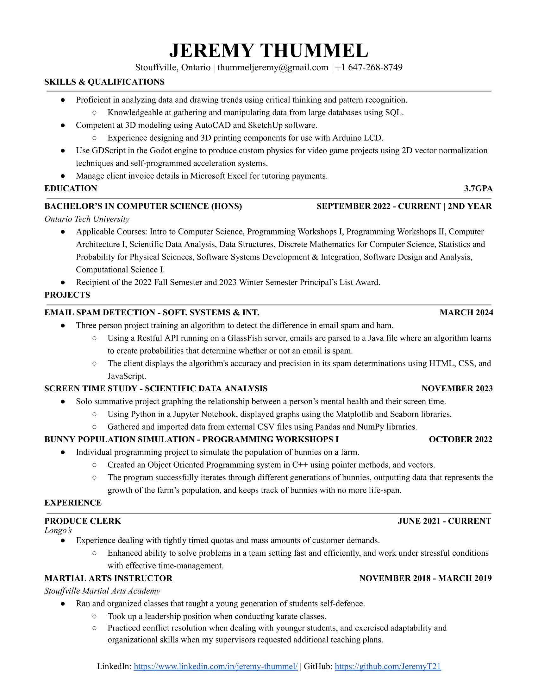

JEREMY THUMMEL

Full Stack Software Developer | BSc (Hons) Co-op Student
Try clicking my picture!
Hi! My name is Jeremy Thummel, I am pursuing a Bachelor's in Computer Science
with Honours at Ontario Tech University. I am seeking industry experience,
and I am a part of Ontario Tech's co-op program.
⸺
On this website you will find various programming projects
I have worked on, demonstrating my passion for coding and my abilities.
While browsing my site, if you want to learn more about a project just click on it!
Feel free to reach me any time at thummeljeremy@gmail.com.
For further information on myself, my CV is attached below:
(Click to Enlarge)
